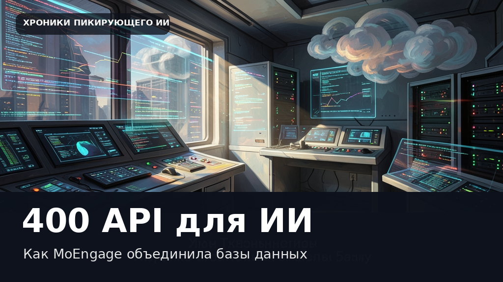

MoEngage превратила 400 внутренних API в инструменты для ИИ без лишней головной боли
Этот текст и иллюстрация созданы автоматически. В статье могут быть неточности; это не опубликованная редакционная новость.

Когда инженерные команды начинают создавать ИИ-агентов, необходимые им возможности часто уже существуют в виде внутренних интерфейсов. Проблема заключается не в разработке новой функциональности, а в том, чтобы сделать сотни закрытых API доступными для нейросетей без угрозы безопасности. Платформа MoEngage столкнулась именно с такой задачей, имея за продуктом около 400 внутренних REST API, созданных 25 командами.
Чтобы решить проблему, разработчики применили инструмент AgentCore Gateway из состава Amazon Bedrock AgentCore. Это позволило превратить частные интерфейсы в безопасные инструменты для агентов с настроенными правами доступа. Такой подход сэкономил компании около шести месяцев работы платформенной инженерии, а подключение нового API теперь занимает считанные часы вместо дней.
Интересно, что специалисты компании изначально отказались от популярной идеи создавать под каждый сервис отдельный сервер Model Context Protocol. Сорок серверов означали бы постоянный мониторинг и исправление уязвимостей, поэтому всю работу со стандартными протоколами взяла на себя центральная платформа, избавив продуктовые команды от лишней рутины.
Дата объявления в RSS: 2026-10-29. Дата черновика: 2026-10-30.